Soru 1Cevap: E
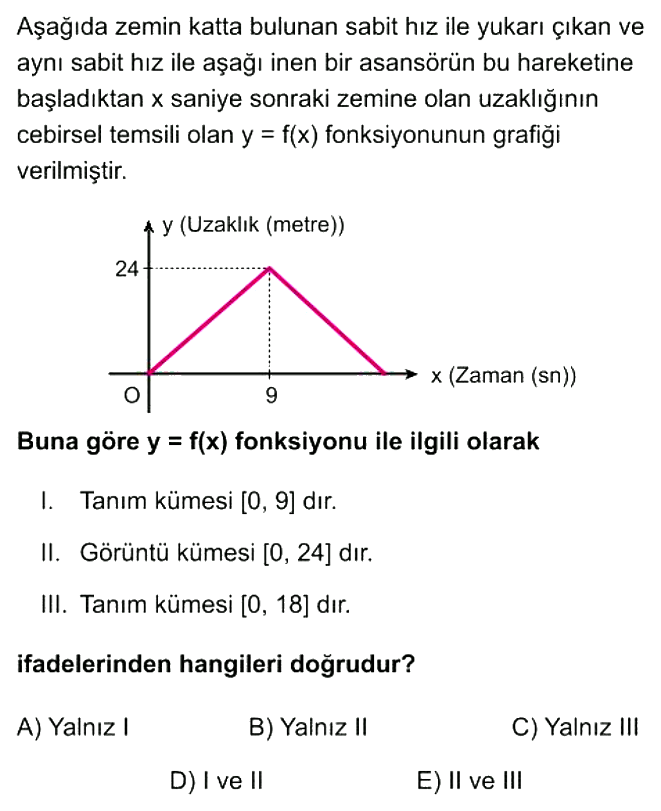
Çözüm
- Asansör $0$'dan $9$. saniyeye kadar çıkıp sonra aynı hızla iner; iniş de $9$ saniye sürer: tanım kümesi $[0,18]$.
- Uzaklık $0$ ile en çok $24$ metre arasında değişir: görüntü kümesi $[0,24]$.
- I yanlış, II ve III doğru (E).
Cevap: E
Soru 2Cevap: D
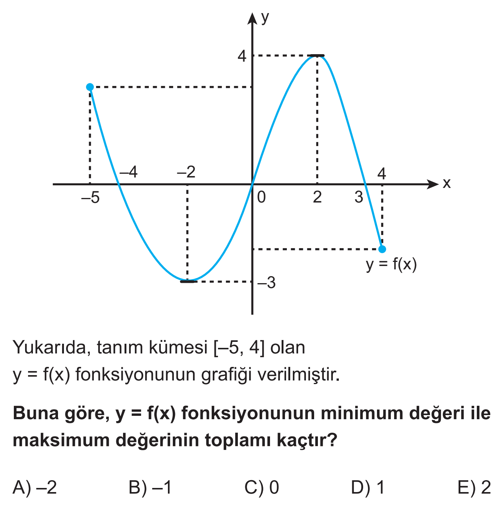
Çözüm
- Grafiğin en yüksek noktası $(2,4)$: maksimum değer $4$.
- En alçak noktalar $(-2,-3)$ ve $(4,-3)$: minimum değer $-3$.
- Toplam $4+(-3)=1$ (D).
Cevap: D
Soru 3Cevap: D
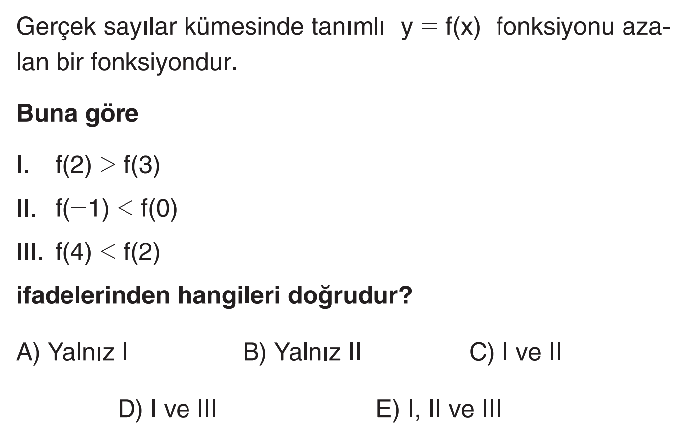
Çözüm
- Azalan fonksiyonda $x_1\lt x_2\Rightarrow f(x_1)\gt f(x_2)$.
- $2\lt 3\Rightarrow f(2)\gt f(3)$: I doğru; $4\gt 2\Rightarrow f(4)\lt f(2)$: III doğru.
- $-1\lt 0\Rightarrow f(-1)\gt f(0)$ olmalı; II yanlış. Cevap: I ve III (D).
Cevap: D
Soru 4Cevap: D
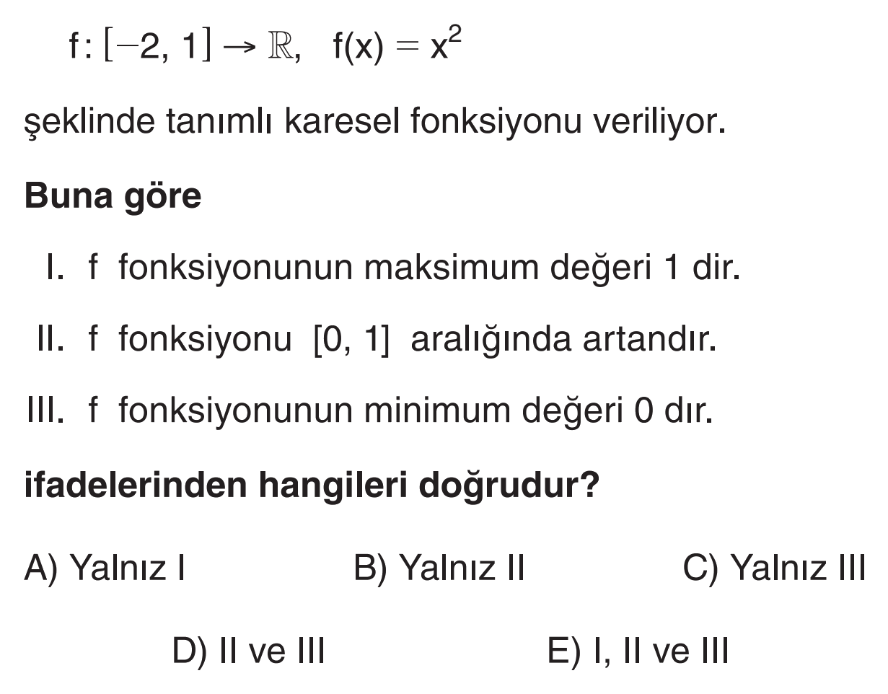
Çözüm
- $[-2,1]$'de en büyük değer $f(-2)=4$: I yanlış.
- $[0,1]$'de $x^2$ artan: II doğru.
- En küçük değer $f(0)=0$: III doğru. Cevap D.
Cevap: D
Soru 5Cevap: A
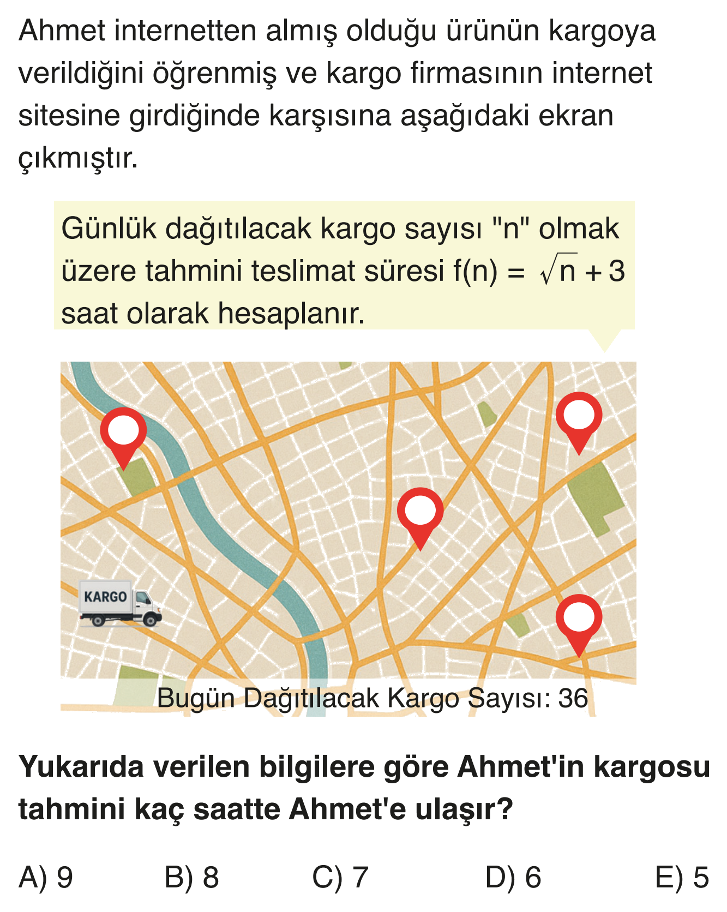
Çözüm
- $n=36$.
- $f(36)=\sqrt{36}+3$.
- $=9$ saat (A).
Cevap: A
Soru 6Cevap: D
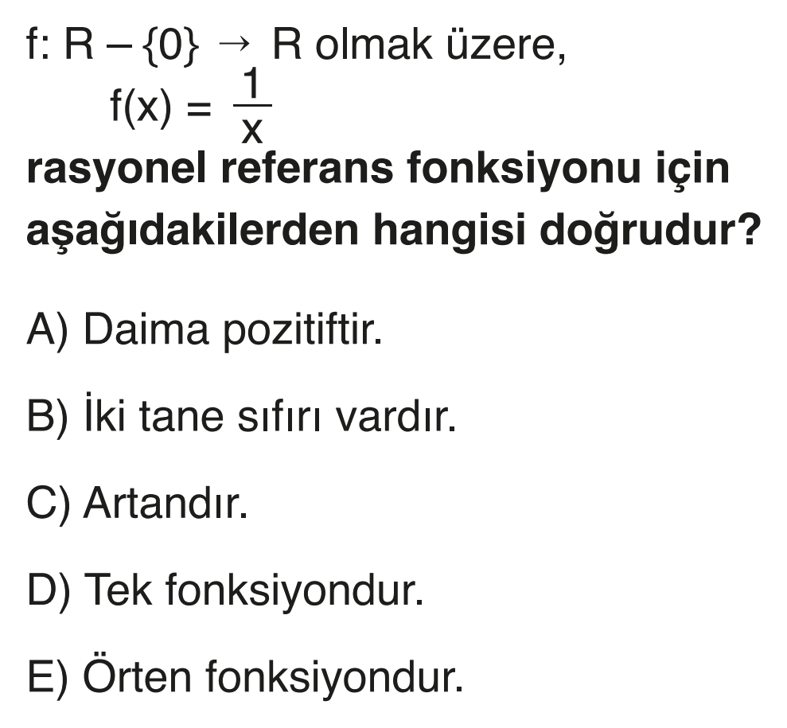
Çözüm
- $\dfrac1x$ negatif $x$'lerde negatiftir; sıfırı yoktur (A, B yanlış).
- $(-\infty,0)$ ve $(0,\infty)$'da ayrı ayrı azalır; $0$ değerini almadığından $\mathbb R$'ye örten değildir.
- $f(-x)=-\dfrac1x=-f(x)$: tek fonksiyondur (D).
Cevap: D
Soru 7Cevap: E
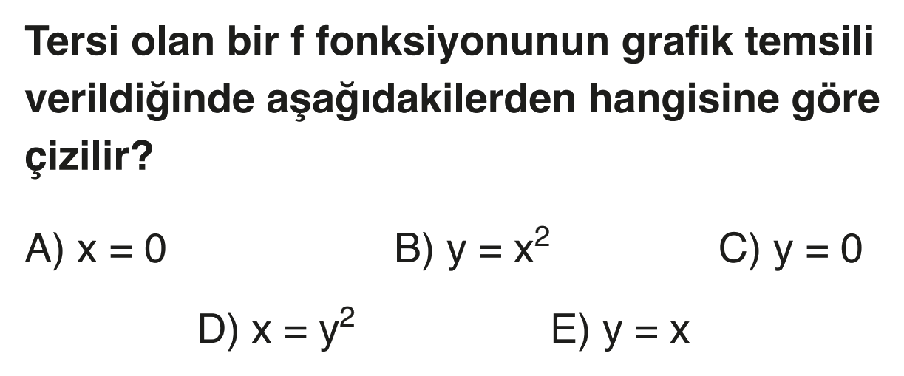
Çözüm
- $(a,b)$ noktası $f$'nin grafiğinde ise $(b,a)$ noktası $f^{-1}$'in grafiğindedir.
- $(a,b)$ ile $(b,a)$, $y=x$ doğrusuna göre simetriktir.
- Ters fonksiyonun grafiği $y=x$'e göre çizilir (E).
Cevap: E
Soru 8Cevap: A
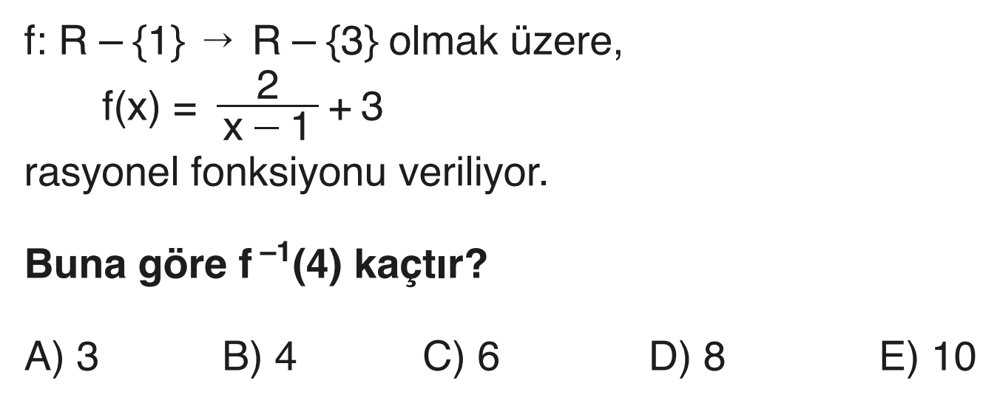
Çözüm
- $f^{-1}(4)=a\iff f(a)=4$.
- $\dfrac2{a-1}+3=4\Rightarrow\dfrac2{a-1}=1$.
- $a=3$ (A).
Cevap: A
Soru 9Cevap: E
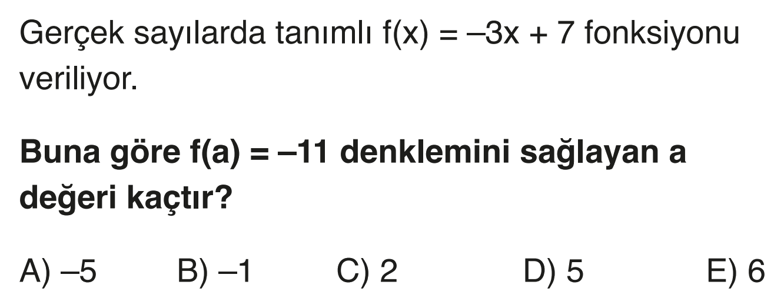
Çözüm
- $f(a)=-3a+7=-11$.
- $-3a=-18$.
- $a=6$ (E).
Cevap: E
Soru 10Cevap: B
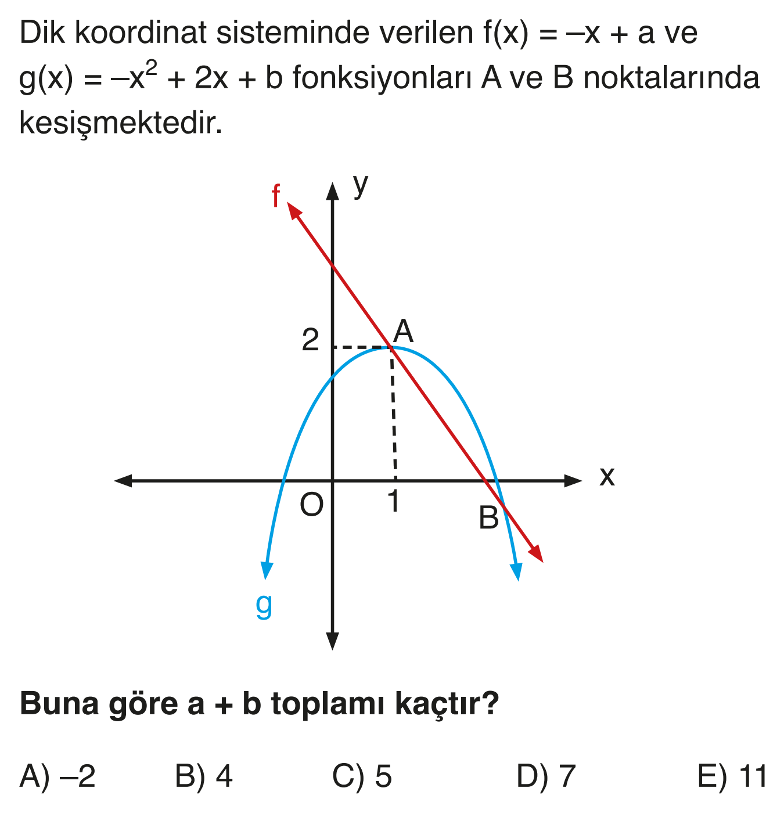
Çözüm
- Grafikler $A(1,2)$'de kesişiyor.
- $f(1)=-1+a=2\Rightarrow a=3$; $g(1)=-1+2+b=2\Rightarrow b=1$.
- $a+b=4$ (B).
Cevap: B
Soru 11Cevap: B
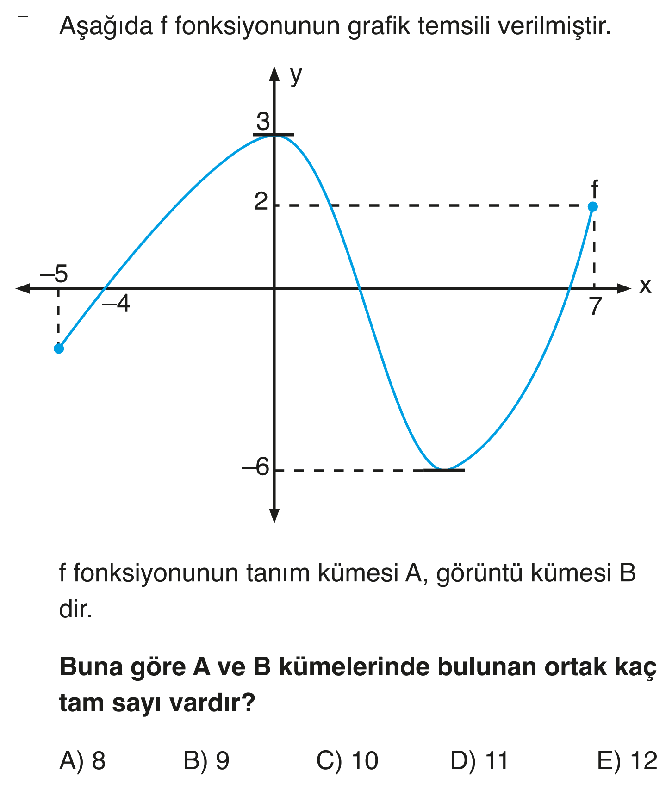
Çözüm
- Grafik $x=-5$'ten $x=7$'ye: $A=[-5,7]$.
- En küçük değer $-6$, en büyük $3$: $B=[-6,3]$.
- $A\cap B=[-5,3]$; tam sayılar $-5,\dots,3$: $9$ tane (B).
Cevap: B
Soru 12Cevap: C
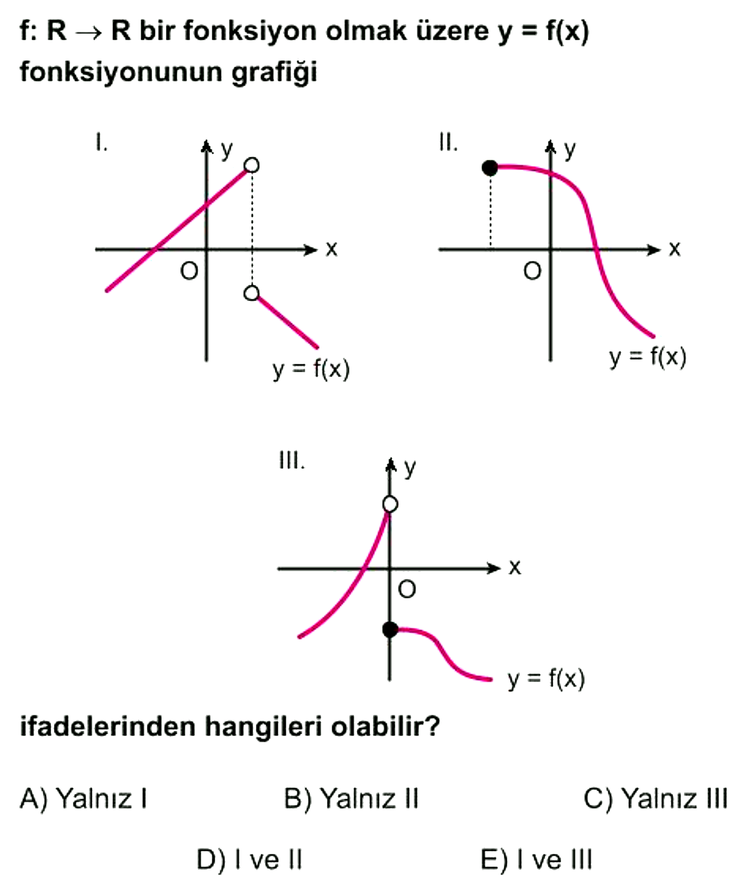
Çözüm
- $\mathbb R$'de fonksiyon için her $x$'te tam bir değer olmalı.
- I'de kırılma noktasında iki boş daire var: o $x$ için değer yok. II'de grafik soldaki dolu noktada bitiyor: daha soldaki $x$'ler için değer yok.
- III'te $x=0$'da üstte boş, altta dolu nokta: tek değer var. Cevap Yalnız III (C).
Cevap: C
Soru 13Cevap: E
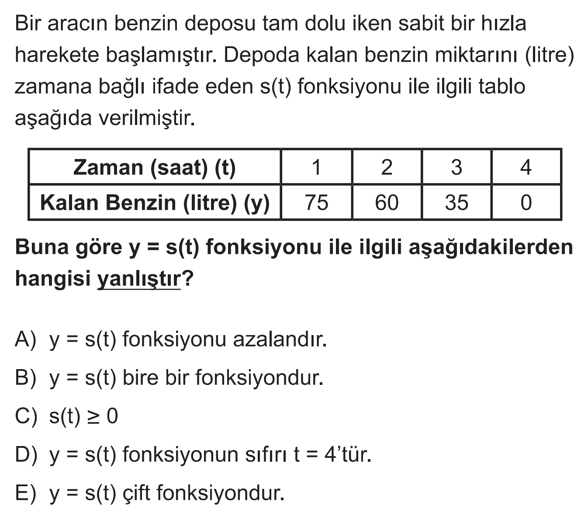
Çözüm
- Tabloda zaman arttıkça kalan benzin azalıyor: azalan ve dolayısıyla bire bir (A, B doğru).
- Benzin miktarı negatif olamaz ve $t=4$'te $0$: C, D doğru.
- Tanım kümesi negatif zamanları içermediğinden $s(-t)=s(t)$ söz konusu olamaz; çift fonksiyon değildir: yanlış olan E.
Cevap: E
Soru 14Cevap: E
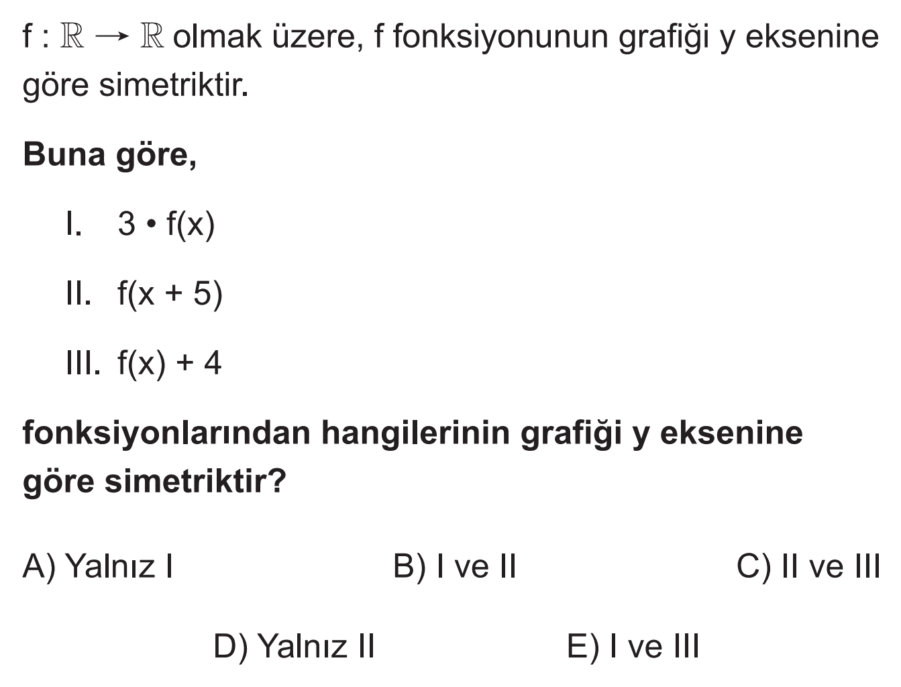
Çözüm
- $f(-x)=f(x)$ ise $3f(-x)=3f(x)$: I çift.
- $f(x)+4$ için $f(-x)+4=f(x)+4$: III çift.
- $f(x+5)$ grafiği 5 birim sola kayar, simetri ekseni $x=-5$ olur: II çift değil. Cevap: I ve III (E).
Cevap: E
Soru 15Cevap: D
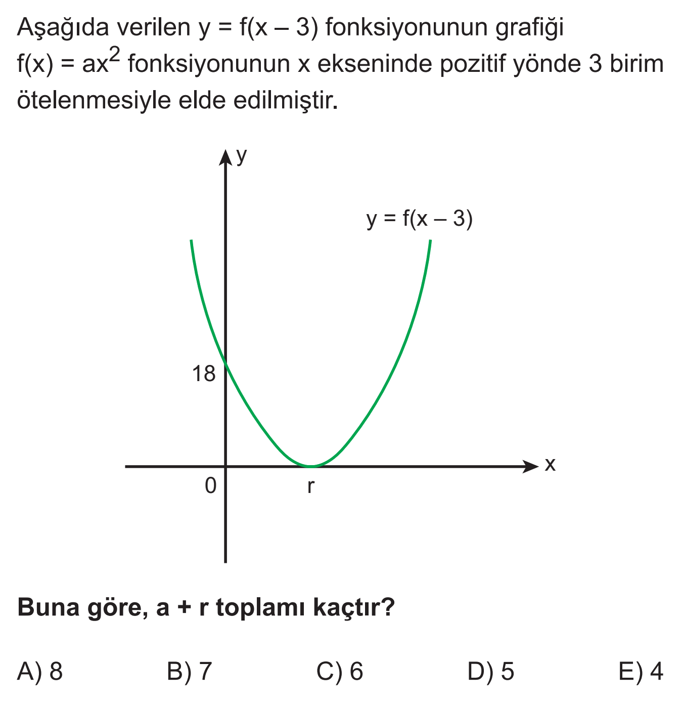
Çözüm
- $f(x-3)=a(x-3)^2$; tepe noktası $(3,0)$, yani $r=3$.
- Grafik $y$ eksenini $18$'de kesiyor: $a(0-3)^2=9a=18\Rightarrow a=2$.
- $a+r=5$ (D).
Cevap: D
Soru 16Cevap: B
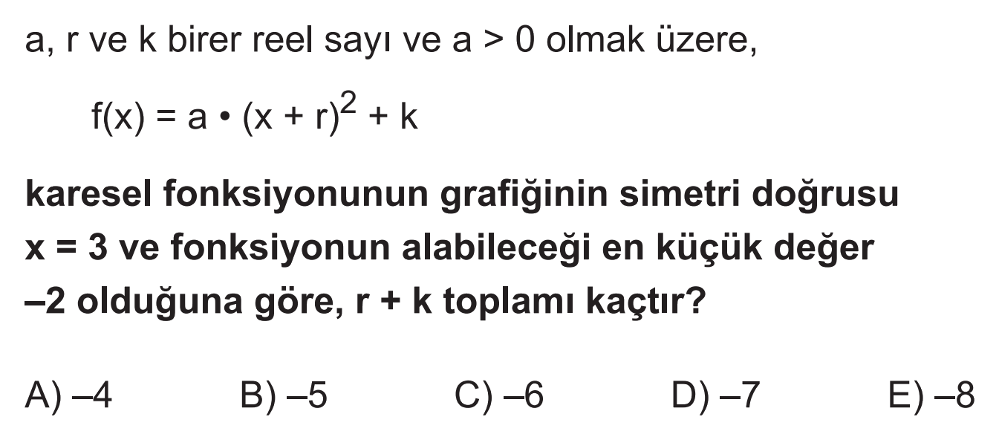
Çözüm
- $a(x+r)^2+k$'nın tepe noktası $(-r,k)$; simetri doğrusu $x=-r=3\Rightarrow r=-3$.
- $a\gt0$ olduğundan en küçük değer $k=-2$.
- $r+k=-5$ (B).
Cevap: B
Soru 17Cevap: E
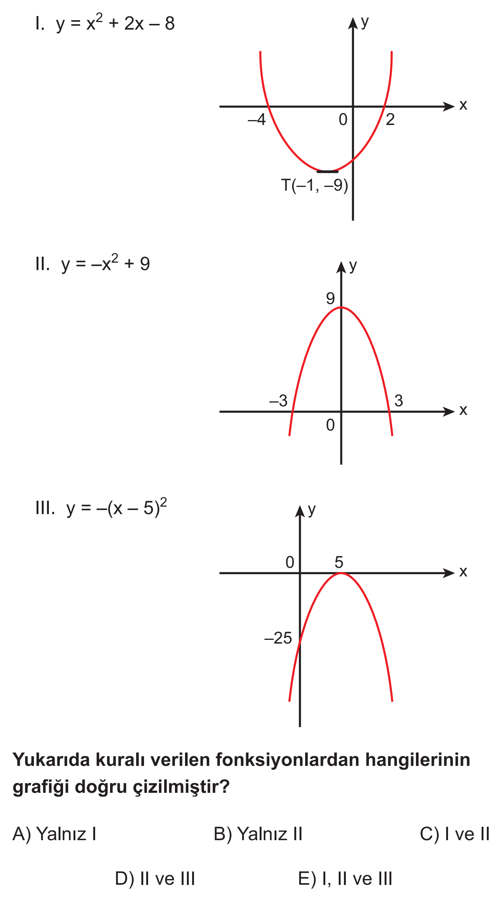
Çözüm
- I: $x^2+2x-8=(x+4)(x-2)=(x+1)^2-9$: kökler $-4,2$, tepe $(-1,-9)$ doğru.
- II: $-x^2+9$: kökler $\pm3$, tepe $(0,9)$ doğru.
- III: $-(x-5)^2$: tepe $(5,0)$, $y$ eksenini $-25$'te keser; doğru. Cevap E.
Cevap: E
Soru 18Cevap: D
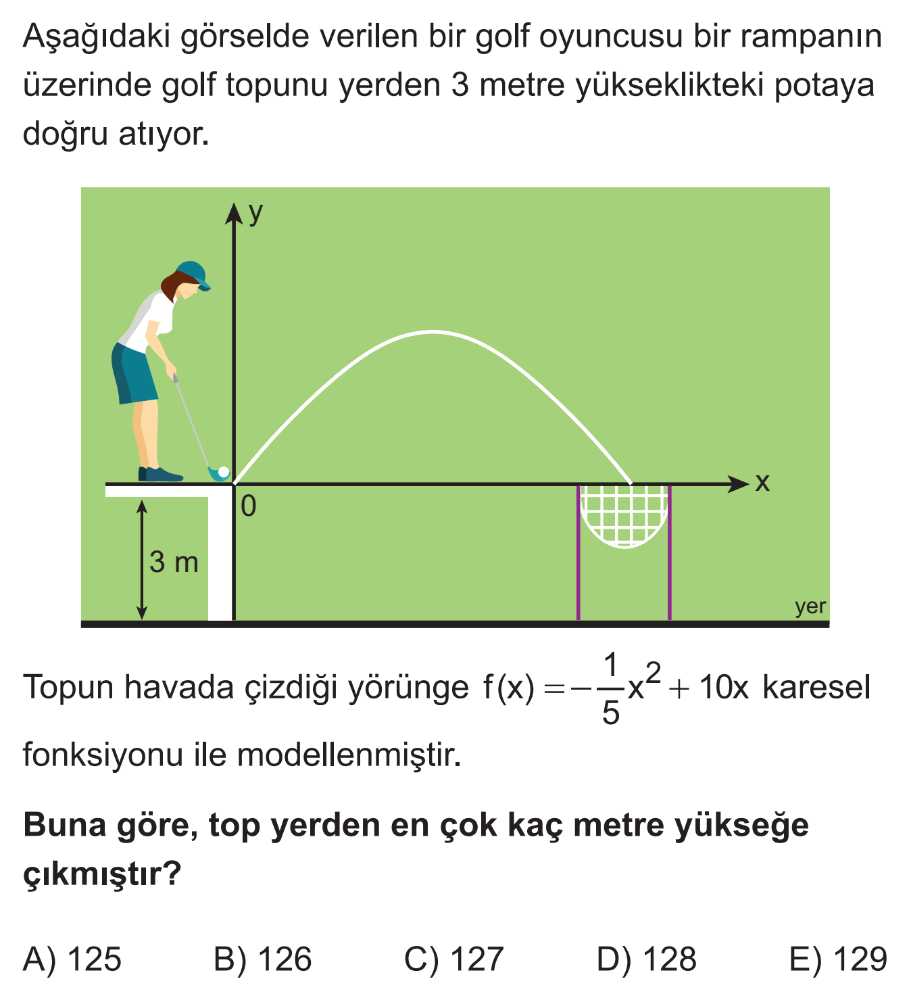
Çözüm
- $-\dfrac15x^2+10x=-\dfrac15(x^2-50x)=-\dfrac15(x-25)^2+125$.
- Topun rampaya göre en büyük yüksekliği $125$ m.
- Rampa yerden $3$ m yukarıda: $125+3=128$ m (D).
Cevap: D
Soru 19Cevap: E
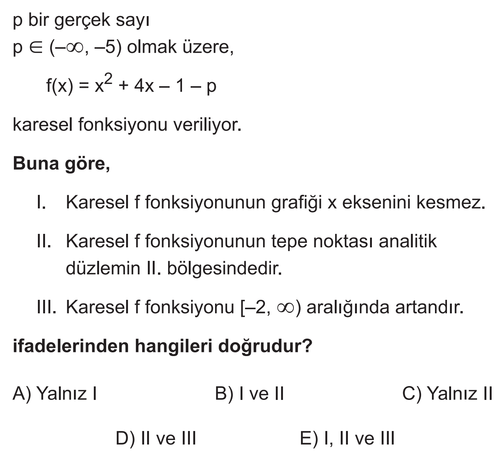
Çözüm
- $x^2+4x-1-p=(x+2)^2-5-p$; tepe noktası $(-2,\,-5-p)$.
- $p\lt-5\Rightarrow -5-p\gt0$: en küçük değer pozitif, grafik $x$ eksenini kesmez (I) ve tepe II. bölgede (II).
- Kollar yukarı, tepe $x=-2$'de: $[-2,\infty)$'da artan (III). Cevap E.
Cevap: E
Soru 20Cevap: C
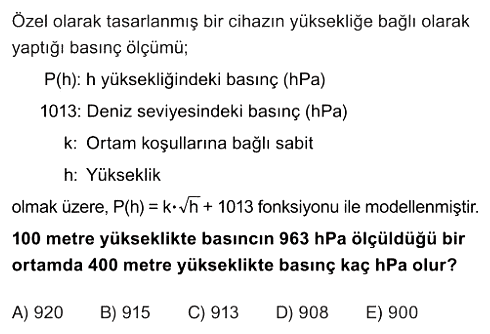
Çözüm
- $P(100)=k\cdot10+1013=963\Rightarrow k=-5$.
- $P(400)=-5\sqrt{400}+1013$.
- $=-100+1013=913$ hPa (C).
Cevap: C
Soru 21Cevap: B
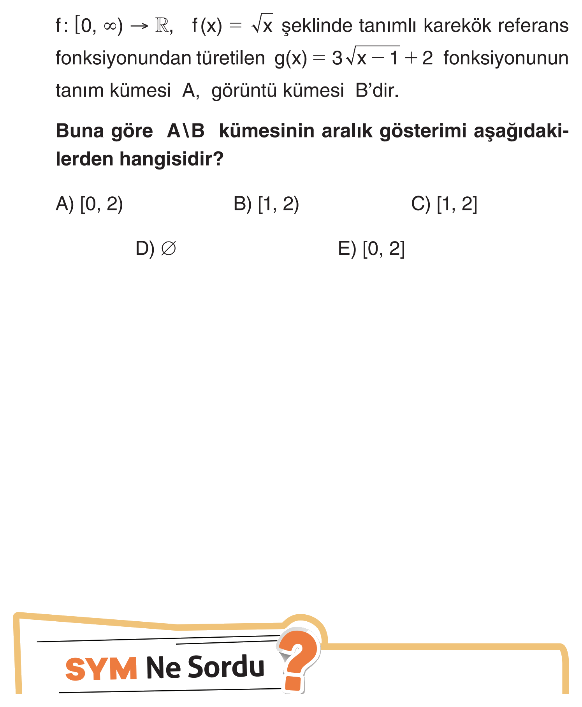
Çözüm
- $g(x)=3\sqrt{x-1}+2$: $A=[1,\infty)$.
- $\sqrt{x-1}\ge0\Rightarrow g(x)\ge2$: $B=[2,\infty)$.
- $A\setminus B=[1,2)$ (B).
Cevap: B
Soru 22Cevap: B
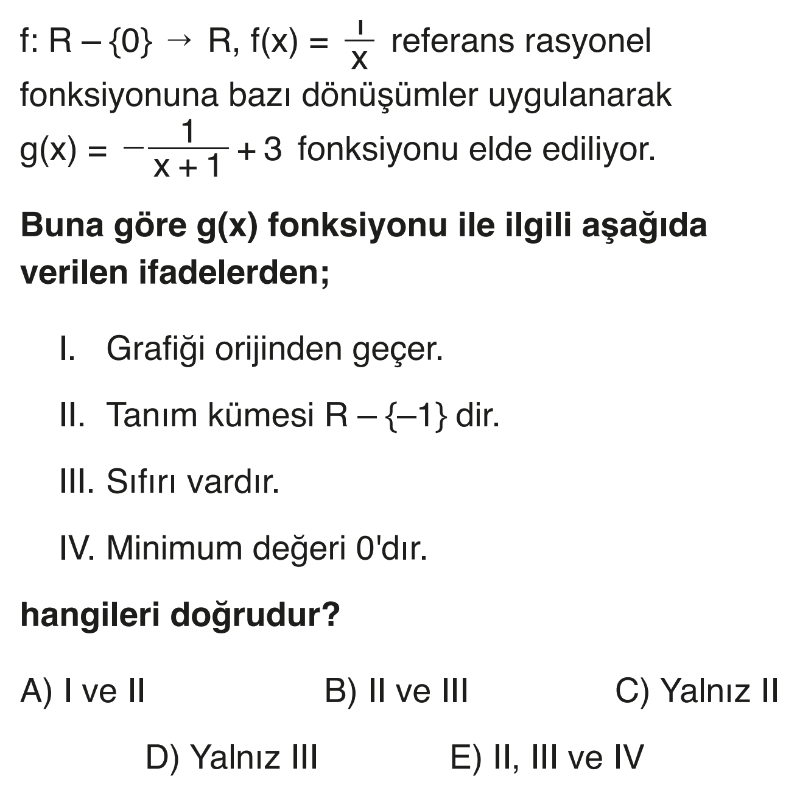
Çözüm
- $g(0)=-1+3=2\ne0$: orijinden geçmez (I yanlış); payda $x+1\ne0$: tanım kümesi $\mathbb R-\{-1\}$ (II doğru).
- $-\dfrac1{x+1}+3=0\Rightarrow x+1=\dfrac13$: sıfırı var (III doğru).
- Kollar $\pm\infty$'a gider: minimum değer yok (IV yanlış). Cevap B.
Cevap: B
Soru 23Cevap: B
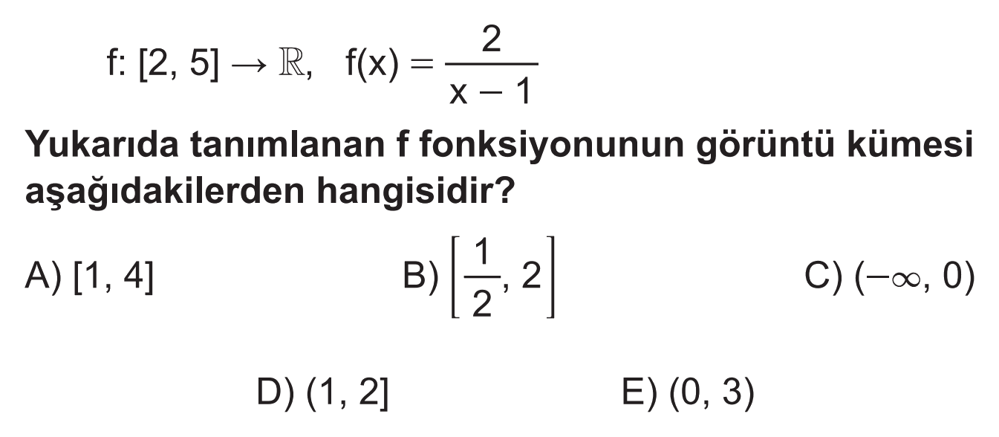
Çözüm
- $x\gt1$ için $\dfrac2{x-1}$ azalan.
- $f(2)=2$, $f(5)=\dfrac24=\dfrac12$.
- Görüntü $\left[\dfrac12,2\right]$ (B).
Cevap: B
Soru 24Cevap: E
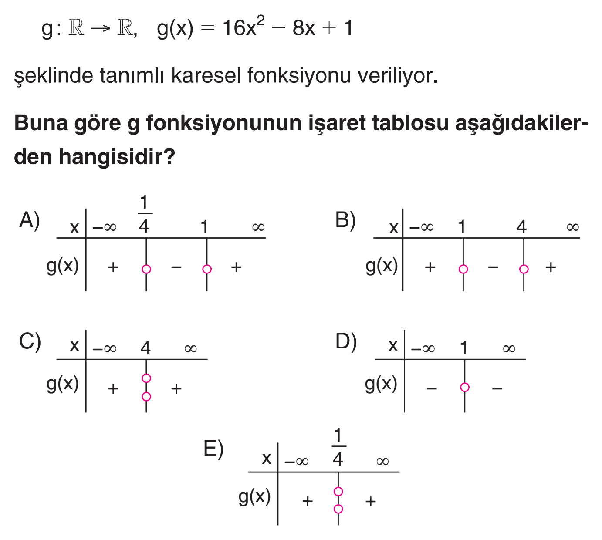
Çözüm
- $16x^2-8x+1=(4x-1)^2$.
- Tek sıfır $x=\dfrac14$ (çift katlı); kare ifade negatif olamaz.
- Tablo: $\dfrac14$'ün iki yanında $+$ (E).
Cevap: E
Soru 25Cevap: B
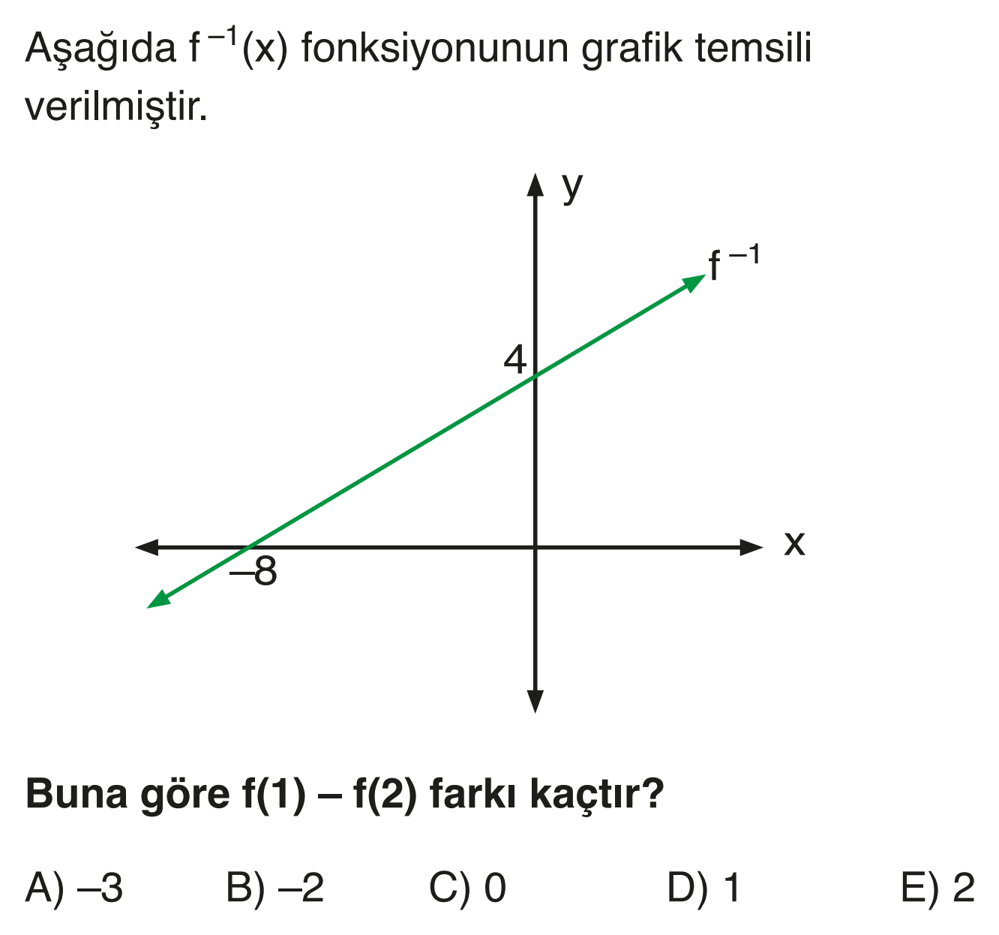
Çözüm
- $f^{-1}$ doğrusu $(-8,0)$ ve $(0,4)$'ten geçer: $f^{-1}(x)=\dfrac x2+4$.
- $f$, bunun tersidir: $y=\dfrac x2+4\Rightarrow x=2y-8$, $f(x)=2x-8$.
- $f(1)-f(2)=-6-(-4)=-2$ (B).
Cevap: B
Soru 26Cevap: B
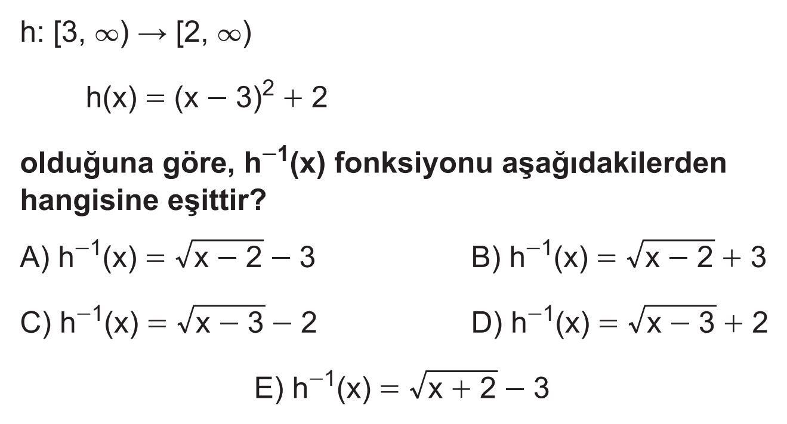
Çözüm
- $y=(x-3)^2+2\Rightarrow (x-3)^2=y-2$.
- $x\ge3$ olduğundan $x-3=\sqrt{y-2}$.
- $h^{-1}(x)=\sqrt{x-2}+3$ (B).
Cevap: B
Soru 27Cevap: E
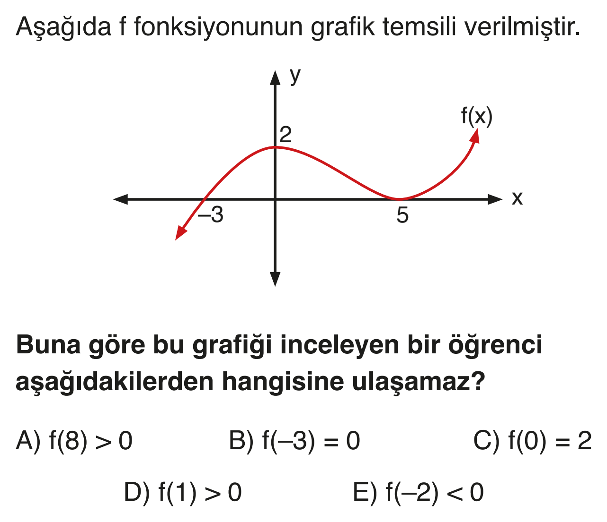
Çözüm
- Grafik $-3$'te $x$ eksenini kesiyor, $5$'te eksene değiyor; $(-3,5)$'te eksenin üstünde.
- $f(8)\gt0$, $f(-3)=0$, $f(0)=2$, $f(1)\gt0$ grafikten okunur.
- $-2\in(-3,5)$ olduğundan $f(-2)\gt0$: $f(-2)\lt0$ sonucuna ulaşılamaz (E).
Cevap: E
Soru 28Cevap: A
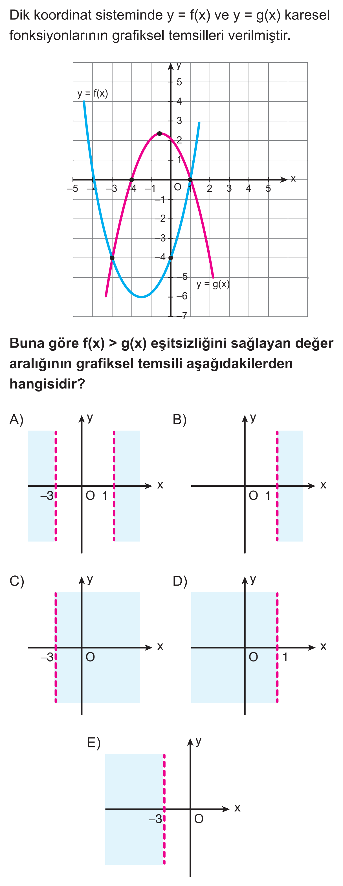
Çözüm
- $f$ (kolları aşağı) ile $g$ (kolları yukarı) $x=-3$ ve $x=1$'de kesişiyor.
- Bu iki nokta arasında $f$'nin grafiği $g$'ninkinin üstünde.
- $f(x)\gt g(x)$: $(-3,1)$, kesişim noktaları hariç (A).
Cevap: A
Soru 29Cevap: D
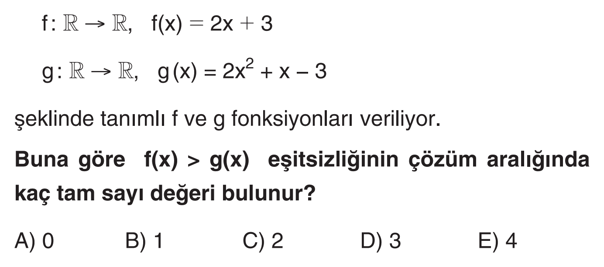
Çözüm
- $2x+3\gt2x^2+x-3\Rightarrow2x^2-x-6\lt0$.
- $(2x+3)(x-2)\lt0\Rightarrow-\dfrac32\lt x\lt2$.
- Tam sayılar $-1,0,1$: $3$ tane (D).
Cevap: D
Soru 30Cevap: C
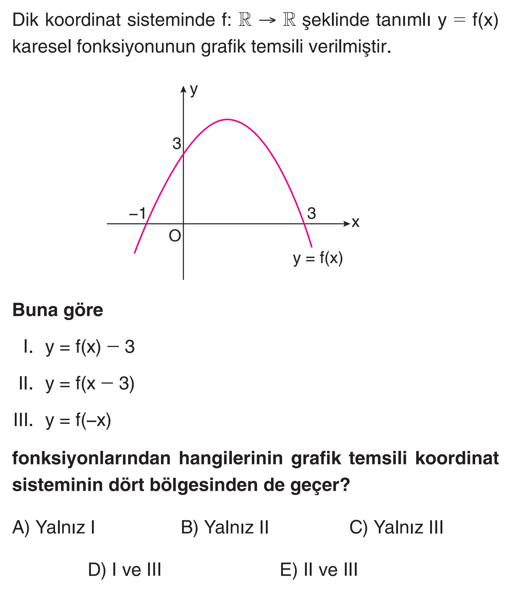
Çözüm
- $f(x)=-(x+1)(x-3)$; I: $f(x)-3=-x(x-2)$, $x\lt0$'da negatif: II. bölgeye uğramaz.
- II: $f(x-3)$'ün sıfırları $2$, $6$; $x\lt2$'de negatif: II. bölgeye uğramaz.
- III: $f(-x)$'in sıfırları $-3$, $1$ ve $f(0)=3\gt0$: dört bölgeden de geçer. Cevap C.
Cevap: C